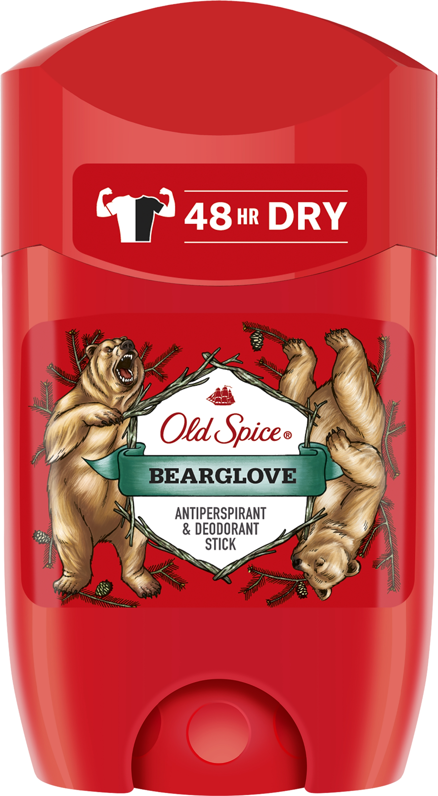

Твёрдый дезодорант
От обильного потоотделения существует уникальное средство – дезодорант кристалл. В отличии от синтетических аналогов, такой дезодорант имеет натуральное происхождение. Во время того, как пот активно выделяется, кристаллы обеззараживают кожные покровы и предотвращают появление неприятного запаха. Как результат – бактерии перестают активно развиваться и слой средства бережно защищает кожу. При использовании дезодоранта кристалла физиологические процессы в организме не нарушаются: влага аккуратно устраняется с поверхности кожи, и средство никак не влияет на закупорку желёз.
Лосьон после бритья
Лосьон предназначен для нанесения только на кожу лица после бритья. Туалетную воду и одеколон наносят на запястья, локтевые сгибы, область за ушами для распространения аромата. На практике доподлинно известно, что многие мужчины после бритья наносят на кожу лица одеколон и даже брызгают туалетной водой. А т.к. они имеют в своем составе спирт, то соответственно дезинфицируют и успокаивают раздраженную кожу. Это можно делать в том случае, если Ваша кожа не жирная, чувствительная и не склонна к раздражению.
Одеколон
Одеколон — самый легкий вид парфюмерии, используемый в основном для мужчин. Назначения и свойства у одеколона такие же, как и у туалетной воды, но концентрация душистых веществ еще меньше — 3-8% в 70-80% спирте. Хотя одеколон не является антиперспирантом, он может спасти нас от фиаско. Когда обычный дезодорант перестает действовать, например, выветрился или под воздействием тепла, нагрузок и появляется запах пота.